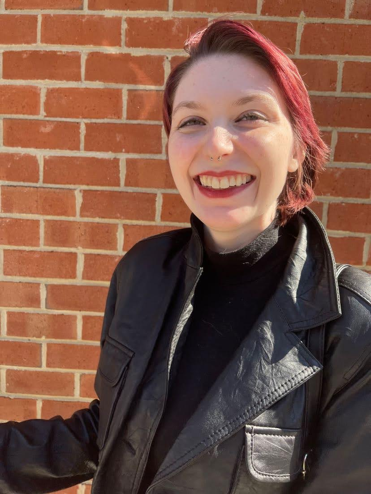

Jamie Oberg
Student Journalist

General Assignment Editor
The Diamondback
2021 - Present
- Gather timely events and stories relevant to the publication before presenting them as options to freelance reporters at a weekly meeting
- Thoroughly edit stories submitted to ensure they adhere to journalistic and publication standards
- Provide support to reporters
Copy Chief
The Diamondback
2021 - 2021
- Organize schedules for a team of copy editors
- Thoroughly fact check and proofread stories for accuracy and AP style
- Consistently hire and train new copy editors
Student Worker
Mckeldin Library
2019 - Present
- Answer any questions posed by patrons and assist students in checking out, returning and finding materials
- Gather books through an understanding of the library system and layout
- Greet entering patrons and help them navigate the library
Copy Writer and Public Relations Manager
HearMeFolks.com
2020 - 2021
- Edit blog posts about living frugally
- Communicate with brands and companies to plan sponsored posts
- Write needed copy for blog posts
Project Manager
MapsCookingKids.com
2020 - 2021
- Schedule posts for the blog
- Brainstorm, assign and edit blog posts
- Coordinate and organize the the different tasks of a 10 person team
- Bachelor of Arts, Film Studies and Journalism, University of Maryland, 2023
- Jimenez-Porter Writers' House
- Customer service/people skills
- Creative writing
- Adobe Premiere Pro